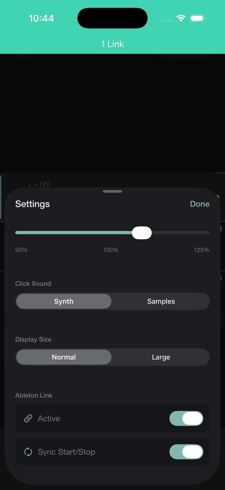
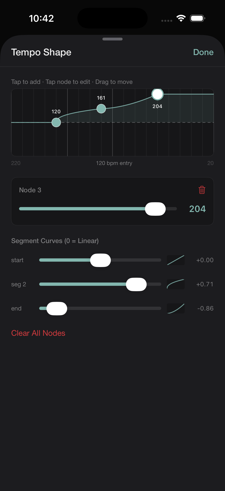

A simplified version of the app.
Tap the meter keyboard. Each tap adds a bar, 5/8, 7/16, 4/4, 3/8, in any order, landing with correct accents by default. Enter any custom meter too, any numerator from 1 to 32 over 2, 4, 8, or 16. For the bars that need more, every subdivision is a tap in the editor.
Ableton Link starts and stops Tactus in sync with another Tactus user, or any Link-enabled device, on the same network, each still following their own accents and subdivisions.
Starting together is automatic. Staying together through a rit or accel means everyone needs the same tempo map, so Tactus lets you share a passage and import the whole thing, or just its tempo map. At a steady tempo, matching BPM is all it takes.

Draw a tempo curve across any range of bars, linear, ease-in, or ease-out per segment. A ritardando that lands softly. An accelerando that plateaus before the downbeat.

Percussionists preparing contemporary repertoire. Conductors internalizing a mixed-meter score before rehearsal. Composers, chamber musicians, and orchestral musicians working through anything a normal metronome can’t handle.
Tactus is live on the App Store. Download and map your first passage.
Download on the App Store